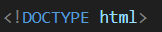
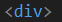
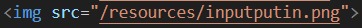
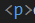
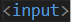
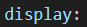
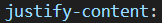
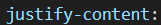
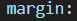
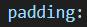

HTML
DOCTYPE: Tells the browser what the latest version of HTML is
div: Used to group contents together
img src:Allows you to show an image you want to display on the website
p: Creates a block of text
input: Allows the user to input data
CSS
display: Determines how an HTML element is displayed on a webpage
justify content: Determines how the space between and around items is distributed within the container.
align items: A property used in flexbox and grid layouts to align items along the cross axis (perpendicular to the main axis) within a container
margin: A property used to create space around elements
padding: A property used to create space inside an element, between its content and its border.
